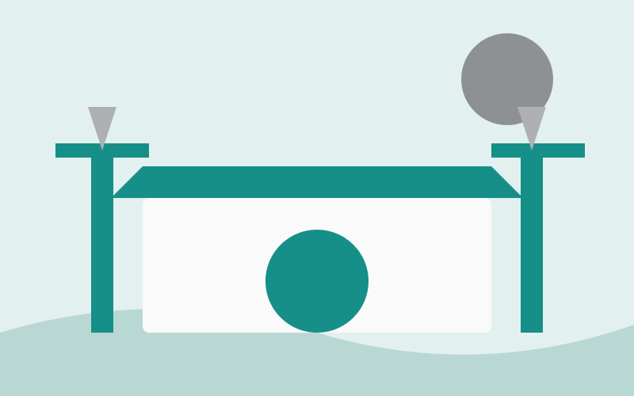
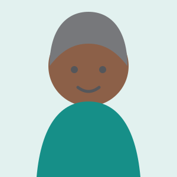

Ahad · 07.30
Gedung 1
Jl. Kemang Raya No. 18, Mampang · 2.4 km
Assalamu’alaikum
Belajar, berbagi, dan bertumbuh bersama komunitas yang membawa ilmu lebih dekat ke rumah.

Jl. Kemang Raya No. 18, Mampang · 2.4 km
Pilihan terdekat
Jl. Kemang Raya No. 18, Mampang
Jl. Radio Dalam No. 24, Kebayoran Baru
Jl. Ciputat Raya No. 6, Cilandak
Pemandu kajian

Tafsir & Akhlak
Fiqih Perempuan
Hadis & Tahsin